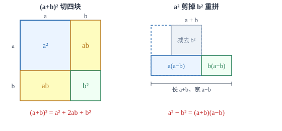

整式的运算
用字母代替数，运算律照旧成立；整式的加减只是合并同类项，乘法公式则是面积模型的代数写法。
| 所属主题 | 数与式 |
|---|---|
| 所属模块 | 代数 |
| 课标学段 | 第四学段（7~9 年级） |
| 前置知识 | 实数及其运算 |
| 核心素养 | 抽象能力运算能力几何直观 |
教材定位
人民教育出版社《人教版（2024版）义务教育教科书·数学》
八年级上册第16章 整式的乘法16.1 幂的运算16.2 整式的乘法16.3 乘法公式
对应八上 16.1~16.3（幂的运算、整式的乘法、乘法公式），加上七上 4.2 的整式加减。教材未把「整式的加减」单列一章，本篇把加减与乘合并成一个完整体系。
说明
用字母代替数，就得到代数式。数与字母的积叫单项式，单独一个数或一个字母也算单项式；几个单项式的和叫多项式，单项式和多项式统称整式。单项式的次数是它所有字母的指数之和，多项式的次数取次数最高的那一项。例如 -2/3x^2y 的系数是 -2/3，次数是 2+1=3；3x^2y-2xy+5 是三次三项式，常数项是 5。
整式加减的本质只有一件事：合并同类项。同类项是所含字母相同、相同字母的指数也相同的项，合并时系数相加减，字母连同指数原样保留。整式乘法靠三条幂的运算法则支撑：同底数幂相乘，底数不变、指数相加；幂的乘方，底数不变、指数相乘；积的乘方，把每个因式分别乘方再相乘。多项式相乘就是反复用分配律，把每一项都乘遍，再把同类项收起来。
使用场景
当题目要求「先化简，再求值」时，不要直接把数字代进去硬算。先按去括号、合并同类项的顺序把式子收拾干净，最后只算一次乘法，既快又不容易出错。这类题在考试里几乎每年都出现，考查的正是运算顺序而不是算术。
当题目给出图形的长、宽、边长含字母时，把面积写成整式，再用乘法公式展开或反过来因式分解。例如边长增加、挖去一块、四角剪去小正方形折成盒子，这类问题的答案往往就是一个乘法公式。
注意点
括号前是负号时，去括号要改变括号内每一项的符号：-(2a-3b)=-2a+3b，只改第一项是最常见的失分点。括号前有系数时，系数要乘遍括号内每一项，不能只乘第一项。
三个容易混的写法必须分清：(-2a)^2=4a^2，因为负号也在括号里一起平方；-2a^2 只把 a 平方，结果是 -2a^2；a^2\cdot a^3=a^5，而 (a^2)^3=a^6，前者指数相加、后者指数相乘。
证明

图 1：完全平方公式与平方差公式都是同一张图面积的两种数法
证明
结论 1完全平方公式：(a+b)^2=a^2+2ab+b^2。
完全平方公式：边长 a+b 的正方形，可以用两条线切成四块：a× a、a× b、b× a、b× b，四块面积加起来就是 a^2+2ab+b^2。同一个面积用边长算就是 (a+b)^2，两种数法必须相等，于是 (a+b)^2=a^2+2ab+b^2。
关键一步依据是「同一块面积用两种方法算，结果必须相等」：按整边长算是 (a+b)^2，按分割算是四块面积之和 a^2+2ab+b^2，其中 a× b 与 b× a 是两块面积相等的长方形，合起来是 2ab——系数 2 的来源就在这里。
结论 2两数差的平方：(a-b)^2=a^2-2ab+b^2。
把 b 换成 -b，由于 (-b)^2=b^2、2a(-b)=-2ab，立刻得到 (a-b)^2=a^2-2ab+b^2。所以两个完全平方公式其实是一个公式的两种写法。
关键一步依据是上一条的完全平方公式对 b 的任意取值都成立，把它代入 b=-b 即可；其中 (-b)^2=b^2 用的是平方不改变符号，2a(-b)=-2ab 用的是乘法交换律与负号规则。所以这不是新公式，而是一个公式的特例。
结论 3平方差公式：a^2-b^2=(a+b)(a-b)。
平方差：边长 a 的正方形剪掉角上边长 b 的小正方形，剩下 a^2-b^2。把剩下的部分沿缺口切成两块，重新拼起来，恰好是一个长 a+b、宽 a-b 的长方形（图 1 右），于是 a^2-b^2=(a+b)(a-b)。
关键一步同样是面积不变量：剪拼之前算出的面积是 a^2-b^2，剪拼之后是长 (a+b)、宽 (a-b) 的长方形面积 (a+b)(a-b)，面积没变所以两式相等；这也是所有「和乘差」型公式的通用来源。
结论 4两个完全平方公式与平方差公式都不是背下来的，而是同一块面积换了两种数法。
两条结论都不是背出来的，而是同一块面积换了两种算法。这也是判断用哪个公式的线索：看到「和乘差」想到拼长方形，看到「和的平方」想到切四块。
关键一步依据是「两个式子表示同一个量时它们必然相等」这条判据：能还原成同一块面积的两个式子一定相等；反过来要检验一个公式，只需代一组具体的 a、b 看两边是否同值。切法不同，公式的形状就不同，所以选公式其实是在选切法。
动手实验
取 a=5、b=3 做数值验证：(5+3)^2=64，而 5^2+2× 5× 3+3^2=25+30+9=64；(5+3)(5-3)=8× 2=16，而 5^2-3^2=25-9=16。再取 a=5、b=5 这种极端情况，(5-5)^2=0 而 5^2-2× 25+5^2=0，公式依然成立。
解题思路
化简求值题走固定的四步：第一步去括号，逐项检查符号与系数有没有乘遍；第二步找同类项，按字母与指数分组；第三步合并，只加减系数；第四步代入数值，注意负数与分数代入时要加括号。整个过程里不要提前代数字，否则同类项会被数字搅乱。
整式乘法先看结构再动手。两项乘两项、其中一项符号相反，是平方差；两项乘两项、两边完全一样，是完全平方；结构都不像，就用分配律逐项乘。乘完一定要回头数项数：两个二项式相乘应该得到四项，合并后通常是三项或两项，如果只剩一项，多半是中间项被漏掉或算错。
遇到重复出现的整块，用整体思想能省很多力气。把 (a+b) 看作一个字母 t，那么 (a+b)^2-4(a+b)+4 就是 t^2-4t+4=(t-2)^2，再换回来得 (a+b-2)^2。这类题表面在考乘法，实际在考「能不能看出重复结构」。
按场景的例题
例 1（场景：图形设计） 长方形绿地的长与宽用含字母的式子表示
一块长方形绿地，长是 (2x+3) 米，宽是 (2x-3) 米。用含 x 的式子表示它的面积；当 x=10 时，面积是多少平方米？
解：面积 =(2x+3)(2x-3)。两项和乘两项差，符合平方差结构，把 2x 看作公式里的 a、3 看作 b：(2x)^2-3^2=4x^2-9。当 x=10 时，4× 100-9=391。也可以直接验算：长 23 米、宽 17 米，23× 17=391，一致。
答：面积是 (4x^2-9) 平方米；当 x=10 时为 391 平方米。
例 2（场景：竞技与游戏） 数学竞赛中的化简求值题
先化简，再求值：(2x+1)^2-(2x+1)(2x-1)，其中 x=-2。
解：分别展开两项：(2x+1)^2=4x^2+4x+1，(2x+1)(2x-1)=4x^2-1。相减时注意给第二项整体加括号：(4x^2+4x+1)-(4x^2-1)=4x^2+4x+1-4x^2+1=4x+2。代入 x=-2 得 4×(-2)+2=-6。
答：化简得 4x+2，当 x=-2 时值为 -6。
例 3（场景：测量与工程） 正方形花砖边长加长后的面积增量
一块正方形花砖边长 a 厘米，把边长加长 3 厘米后，面积增加了多少平方厘米？如果 a=12，增加的面积是多少？
解：新面积减旧面积：(a+3)^2-a^2=(a^2+6a+9)-a^2=6a+9。当 a=12 时，6× 12+9=81。用直接算法核对：原面积 144，新面积 15^2=225，增加 81，一致。
答：面积增加 (6a+9) 平方厘米；当 a=12 时增加 81 平方厘米。
常用推论
由 (a+b)^2=a^2+2ab+b^2 移项得 a^2+b^2=(a+b)^2-2ab，也等于 (a-b)^2+2ab。知道两数和与积，就能求平方和，不必解出 a、b 各是多少。
(a+b)^2-(a-b)^2=4ab。这条推论常用来在「和、差、积」三者中知二求一，例如 a+b=7、a-b=3 时，4ab=49-9=40，得 ab=10。
把 x+1/x=3 两边平方，得 x^2+2+\dfrac1x^2=9，所以 x^2+\dfrac1x^2=7。这类「平方后出现常数」的套路在分式与根式题里反复出现。
易错点
错-(2a-3b)=-2a-3b
为什么错只把括号里第一项变了号。括号前是负号，去括号时括号内每一项都要变号。
正确-(2a-3b)=-2a+3b。可以代 a=1、b=1 验证：左边 =-(2-3)=1，右边要等于 1，只有 -2+3 才成立。
错(-2a)^2=-4a^2
为什么错把括号外的平方只作用在 a 上，漏掉了系数 -2 也要平方。积的乘方要把每个因式分别乘方。
正确(-2a)^2=(-2)^2\cdot a^2=4a^2，结果为正。
错(a+b)^2=a^2+b^2
为什么错把「和的平方」当成「平方的和」。全部展开会得到四项 a^2+ab+ba+b^2，其中 ab 出现两次。
正确(a+b)^2=a^2+2ab+b^2。代 a=b=1 检验：(1+1)^2=4，而 1+1=2，漏掉的正是 2ab。
直观理解
把多项式想成一堆积木：同类项是形状完全相同的积木，可以叠在一起数个数；不是同类项就只能并排放着。整式乘法是把每个积木都拿去和另一堆里的每个各配一次，配完再按形状归类。乘法公式则是几种最常见配法的现成结果，认出来就不必一块一块配。